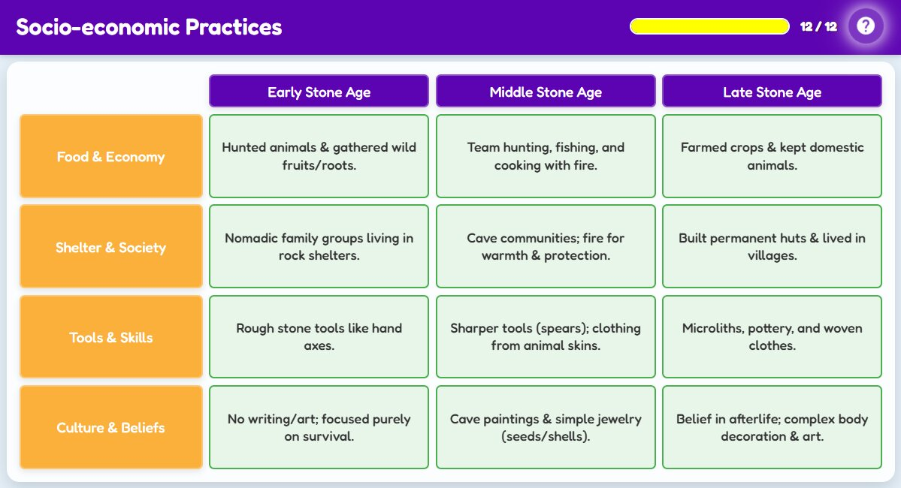

Let us dig deeper! What did early humans eat? Where did they sleep? How did they survive and grow together? In this interactive table, you will explore how life evolved through each stage of the Stone Age. Tap the cells to uncover the secrets of survival, creativity, and community!

Awesome work, history detective! You have compared how early humans ate, lived, created, and believed across the three Stone Age periods.
From simple shelters to farming villages, their journey shows how survival led to society. Now, let us explore the tools they made in detail!